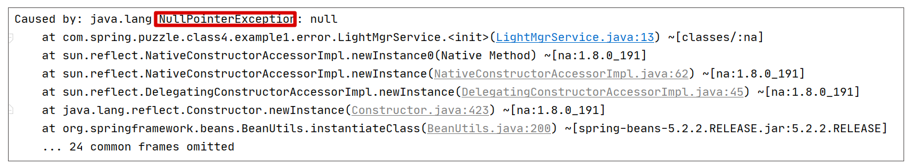
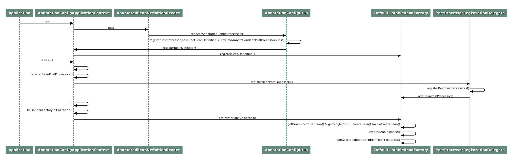

- 00 导读 5分钟轻松了解Spring基础知识.md.html
- 00 开篇词 贴心“保姆”Spring罢工了怎么办？.md.html
- 01 Spring Bean 定义常见错误.md.html
- 02 Spring Bean 依赖注入常见错误（上）.md.html
- 03 Spring Bean 依赖注入常见错误（下）.md.html
- 04 Spring Bean 生命周期常见错误.md.html
- 05 Spring AOP 常见错误（上）.md.html
- 06 Spring AOP 常见错误（下）.md.html
- 07 Spring事件常见错误.md.html
- 08 答疑现场：Spring Core 篇思考题合集.md.html
- 09 Spring Web URL 解析常见错误.md.html
- 10 Spring Web Header 解析常见错误.md.html
- 11 Spring Web Body 转化常见错误.md.html
- 12 Spring Web 参数验证常见错误.md.html
- 13 Spring Web 过滤器使用常见错误（上）.md.html
- 14 Spring Web 过滤器使用常见错误（下）.md.html
- 15 Spring Security 常见错误.md.html
- 16 Spring Exception 常见错误.md.html
- 17 答疑现场：Spring Web 篇思考题合集.md.html
- 18 Spring Data 常见错误.md.html
- 19 Spring 事务常见错误（上）.md.html
- 20 Spring 事务常见错误（下）.md.html
- 21 Spring Rest Template 常见错误.md.html
- 22 Spring Test 常见错误.md.html
- 23 答疑现场：Spring 补充篇思考题合集.md.html
- 导读 5分钟轻松了解一个HTTP请求的处理过程.md.html
- 知识回顾 系统梳理Spring编程错误根源.md.html
- 结束语 问题总比解决办法多.md.html
- 捐赠
04 Spring Bean 生命周期常见错误
你好，我是傅健，这节课我们来聊一聊 Spring Bean 的初始化过程及销毁过程中的一些问题。
虽然说 Spring 容器上手简单，可以仅仅通过学习一些有限的注解，即可达到快速使用的目的。但在工程实践中，我们依然会从中发现一些常见的错误。尤其当你对 Spring 的生命周期还没有深入了解时，类初始化及销毁过程中潜在的约定就不会很清楚。
这会导致这样一些状况发生：有些错误，我们可以在 Spring 的异常提示下快速解决，但却不理解背后的原理；而另一些错误，并不容易在开发环境下被发现，从而在产线上造成较为严重的后果。
接下来我们就具体解析下这些常见案例及其背后的原理。
案例 1：构造器内抛空指针异常
先看个例子。在构建宿舍管理系统时，有 LightMgrService 来管理 LightService，从而控制宿舍灯的开启和关闭。我们希望在 LightMgrService 初始化时能够自动调用 LightService 的 check 方法来检查所有宿舍灯的电路是否正常，代码如下：
import org.springframework.beans.factory.annotation.Autowired;
import org.springframework.stereotype.Component;
@Component
public class LightMgrService {
@Autowired
private LightService lightService;
public LightMgrService() {
lightService.check();
}
}
我们在 LightMgrService 的默认构造器中调用了通过 @Autoware 注入的成员变量 LightService 的 check 方法：
@Service
public class LightService {
public void start() {
System.out.println("turn on all lights");
}
public void shutdown() {
System.out.println("turn off all lights");
}
public void check() {
System.out.println("check all lights");
}
}
以上代码定义了 LightService 对象的原始类。
从整个案例代码实现来看，我们的期待是在 LightMgrService 初始化过程中，LightService 因为标记为 @Autowired，所以能被自动装配好；然后在 LightMgrService 的构造器执行中，LightService 的 shutdown() 方法能被自动调用；最终打印出 check all lights。
然而事与愿违，我们得到的只会是 NullPointerException，错误示例如下：

这是为什么呢？
案例解析
显然这是新手最常犯的错误，但是问题的根源，是我们对Spring类初始化过程没有足够的了解。下面这张时序图描述了 Spring 启动时的一些关键结点：

这个图初看起来复杂，我们不妨将其分为三部分：
- 第一部分，将一些必要的系统类，比如 Bean 的后置处理器类，注册到 Spring 容器，其中就包括我们这节课关注的 CommonAnnotationBeanPostProcessor 类；
- 第二部分，将这些后置处理器实例化，并注册到 Spring 的容器中；
- 第三部分，实例化所有用户定制类，调用后置处理器进行辅助装配、类初始化等等。
第一部分和第二部分并非是我们今天要讨论的重点，这里仅仅是为了让你知道 CommonAnnotationBeanPostProcessor 这个后置处理类是何时被 Spring 加载和实例化的。
这里我顺便给你拓展两个知识点：
- 很多必要的系统类，尤其是 Bean 后置处理器（比如CommonAnnotationBeanPostProcessor、AutowiredAnnotationBeanPostProcessor 等），都是被 Spring 统一加载和管理的，并在 Spring 中扮演了非常重要的角色；
- 通过 Bean 后置处理器，Spring 能够非常灵活地在不同的场景调用不同的后置处理器，比如接下来我会讲到示例问题如何修正，修正方案中提到的 PostConstruct 注解，它的处理逻辑就需要用到 CommonAnnotationBeanPostProcessor（继承自 InitDestroyAnnotationBeanPostProcessor）这个后置处理器。
现在我们重点看下第三部分，即 Spring 初始化单例类的一般过程，基本都是 getBean()->doGetBean()->getSingleton()，如果发现 Bean 不存在，则调用 createBean()->doCreateBean() 进行实例化。
查看 doCreateBean() 的源代码如下：
protected Object doCreateBean(final String beanName, final RootBeanDefinition mbd, final @Nullable Object[] args)
throws BeanCreationException {
//省略非关键代码
if (instanceWrapper == null) {
instanceWrapper = createBeanInstance(beanName, mbd, args);
}
final Object bean = instanceWrapper.getWrappedInstance();
//省略非关键代码
Object exposedObject = bean;
try {
populateBean(beanName, mbd, instanceWrapper);
exposedObject = initializeBean(beanName, exposedObject, mbd);
}
catch (Throwable ex) {
//省略非关键代码
}
上述代码完整地展示了 Bean 初始化的三个关键步骤，按执行顺序分别是第 5 行的 createBeanInstance，第 12 行的 populateBean，以及第 13 行的 initializeBean，分别对应实例化 Bean，注入 Bean 依赖，以及初始化 Bean （例如执行 @PostConstruct 标记的方法 ）这三个功能，这也和上述时序图的流程相符。
而用来实例化 Bean 的 createBeanInstance 方法通过依次调用DefaultListableBeanFactory.instantiateBean() >SimpleInstantiationStrategy.instantiate()，最终执行到 BeanUtils.instantiateClass()，其代码如下：
public static <T> T instantiateClass(Constructor<T> ctor, Object... args) throws BeanInstantiationException {
Assert.notNull(ctor, "Constructor must not be null");
try {
ReflectionUtils.makeAccessible(ctor);
return (KotlinDetector.isKotlinReflectPresent() && KotlinDetector.isKotlinType(ctor.getDeclaringClass()) ?
KotlinDelegate.instantiateClass(ctor, args) : ctor.newInstance(args));
}
catch (InstantiationException ex) {
throw new BeanInstantiationException(ctor, "Is it an abstract class?", ex);
}
//省略非关键代码
}
这里因为当前的语言并非 Kotlin，所以最终将调用 ctor.newInstance() 方法实例化用户定制类 LightMgrService，而默认构造器显然是在类实例化的时候被自动调用的，Spring 也无法控制。而此时负责自动装配的 populateBean 方法还没有被执行，LightMgrService 的属性 LightService 还是 null，因而得到空指针异常也在情理之中。
问题修正
通过源码分析，现在我们知道了问题的根源，就是在于使用 @Autowired 直接标记在成员属性上而引发的装配行为是发生在构造器执行之后的。所以这里我们可以通过下面这种修订方法来纠正这个问题：
@Component
public class LightMgrService {
private LightService lightService;
public LightMgrService(LightService lightService) {
this.lightService = lightService;
lightService.check();
}
}
在第02课的案例 2 中，我们就提到了构造器参数的隐式注入。当使用上面的代码时，构造器参数 LightService 会被自动注入LightService 的 Bean，从而在构造器执行时，不会出现空指针。可以说，使用构造器参数来隐式注入是一种 Spring 最佳实践，因为它成功地规避了案例1中的问题。
另外，除了这种纠正方式，有没有别的方式？
实际上，Spring 在类属性完成注入之后，会回调用户定制的初始化方法。即在 populateBean 方法之后，会调用 initializeBean 方法，我们来看一下它的关键代码：
protected Object initializeBean(final String beanName, final Object bean, @Nullable RootBeanDefinition mbd) {
//省略非关键代码
if (mbd == null || !mbd.isSynthetic()) {
wrappedBean = applyBeanPostProcessorsBeforeInitialization(wrappedBean, beanName);
}
try {
invokeInitMethods(beanName, wrappedBean, mbd);
}
//省略非关键代码
}
这里你可以看到 applyBeanPostProcessorsBeforeInitialization 和 invokeInitMethods 这两个关键方法的执行，它们分别处理了 @PostConstruct 注解和 InitializingBean 接口这两种不同的初始化方案的逻辑。这里我再详细地给你讲讲。
1. applyBeanPostProcessorsBeforeInitialization 与@PostConstruct
applyBeanPostProcessorsBeforeInitialization 方法最终执行到后置处理器 InitDestroyAnnotationBeanPostProcessor 的 buildLifecycleMetadata 方法（CommonAnnotationBeanPostProcessor 的父类）：
private LifecycleMetadata buildLifecycleMetadata(final Class<?> clazz) {
//省略非关键代码
do {
//省略非关键代码
final List<LifecycleElement> currDestroyMethods = new ArrayList<>();
ReflectionUtils.doWithLocalMethods(targetClass, method -> {
//此处的 this.initAnnotationType 值，即为 PostConstruct.class
if (this.initAnnotationType != null && method.isAnnotationPresent(this.initAnnotationType)) {
LifecycleElement element = new LifecycleElement(method);
currInitMethods.add(element);
//非关键代码
}
在这个方法里，Spring 将遍历查找被 PostConstruct.class 注解过的方法，返回到上层，并最终调用此方法。
2. invokeInitMethods 与 InitializingBean 接口
invokeInitMethods 方法会判断当前 Bean 是否实现了 InitializingBean 接口，只有在实现了该接口的情况下，Spring 才会调用该 Bean 的接口实现方法 afterPropertiesSet()。
protected void invokeInitMethods(String beanName, final Object bean, @Nullable RootBeanDefinition mbd)
throws Throwable {
boolean isInitializingBean = (bean instanceof InitializingBean);
if (isInitializingBean && (mbd == null || !mbd.isExternallyManagedInitMethod("afterPropertiesSet"))) {
// 省略非关键代码
else {
((InitializingBean) bean).afterPropertiesSet();
}
}
// 省略非关键代码
}
学到此处，答案也就呼之欲出了。我们还有两种方式可以解决此问题。
- 添加 init 方法，并且使用 PostConstruct 注解进行修饰：
import org.springframework.beans.factory.annotation.Autowired;
import org.springframework.stereotype.Component;
@Component
public class LightMgrService {
@Autowired
private LightService lightService;
@PostConstruct
public void init() {
lightService.check();
}
}
- 实现 InitializingBean 接口，在其 afterPropertiesSet() 方法中执行初始化代码：
import org.springframework.beans.factory.InitializingBean;
import org.springframework.beans.factory.annotation.Autowired;
import org.springframework.stereotype.Component;
@Component
public class LightMgrService implements InitializingBean {
@Autowired
private LightService lightService;
@Override
public void afterPropertiesSet() throws Exception {
lightService.check();
}
}
对比最开始提出的解决方案，很明显，针对本案例而言，后续的两种方案并不是最优的。但是在一些场景下，这两种方案各有所长，不然 Spring 为什么要提供这个功能呢？对吧！
案例 2：意外触发 shutdown 方法
上述实例我给你讲解了类初始化时最容易遇到的问题，同样，在类销毁时，也会有一些相对隐蔽的约定，导致一些难以察觉的错误。
接下来，我们再来看一个案例，还是沿用之前的场景。这里我们可以简单复习一下LightService 的实现，它包含了 shutdown 方法，负责关闭所有的灯，关键代码如下：
import org.springframework.stereotype.Service;
@Service
public class LightService {
//省略其他非关键代码
public void shutdown(){
System.out.println("shutting down all lights");
}
//省略其他非关键代码
}
在之前的案例中，如果我们的宿舍管理系统在重启时，灯是不会被关闭的。但是随着业务的需求变化，我们可能会去掉 @Service 注解，而是使用另外一种产生 Bean 的方式：创建一个配置类 BeanConfiguration（标记 @Configuration）来创建一堆 Bean，其中就包含了创建 LightService 类型的 Bean，并将其注册到 Spring 容器：
import org.springframework.context.annotation.Bean;
import org.springframework.context.annotation.Configuration;
@Configuration
public class BeanConfiguration {
@Bean
public LightService getTransmission(){
return new LightService();
}
}
复用案例 1 的启动程序，稍作修改，让 Spring 启动完成后立马关闭当前 Spring 上下文。这样等同于模拟宿舍管理系统的启停：
@SpringBootApplication
public class Application {
public static void main(String[] args) {
ConfigurableApplicationContext context = SpringApplication.run(Application.class, args);
context.close();
}
}
以上代码没有其他任何方法的调用，仅仅是将所有符合约定的类初始化并加载到 Spring 容器，完成后再关闭当前的 Spring 容器。按照预期，这段代码运行后不会有任何的 log 输出，毕竟我们只是改变了 Bean 的产生方式。
但实际运行这段代码后，我们可以看到控制台上打印了 shutting down all lights。显然 shutdown 方法未按照预期被执行了，这导致一个很有意思的 bug：在使用新的 Bean 生成方式之前，每一次宿舍管理服务被重启时，宿舍里所有的灯都不会被关闭。但是修改后，只有服务重启，灯都被意外关闭了。如何理解这个 bug?
案例解析
通过调试，我们发现只有通过使用 Bean 注解注册到 Spring 容器的对象，才会在 Spring 容器被关闭的时候自动调用 shutdown 方法，而使用 @Component（Service 也是一种 Component）将当前类自动注入到 Spring 容器时，shutdown 方法则不会被自动执行。
我们可以尝试到 Bean 注解类的代码中去寻找一些线索，可以看到属性 destroyMethod 有非常大段的注释，基本上解答了我们对于这个问题的大部分疑惑。
使用 Bean 注解的方法所注册的 Bean 对象，如果用户不设置 destroyMethod 属性，则其属性值为 AbstractBeanDefinition.INFER_METHOD。此时 Spring 会检查当前 Bean 对象的原始类中是否有名为 shutdown 或者 close 的方法，如果有，此方法会被 Spring 记录下来，并在容器被销毁时自动执行；当然如若没有，那么自然什么都不会发生。
下面我们继续查看 Spring 的源代码来进一步分析此问题。
首先我们可以查找 INFER_METHOD 枚举值的引用，很容易就找到了使用该枚举值的方法 DisposableBeanAdapter#inferDestroyMethodIfNecessary：
private String inferDestroyMethodIfNecessary(Object bean, RootBeanDefinition beanDefinition) {
String destroyMethodName = beanDefinition.getDestroyMethodName();
if (AbstractBeanDefinition.INFER_METHOD.equals(destroyMethodName) ||(destroyMethodName == null && bean instanceof AutoCloseable)) {
if (!(bean instanceof DisposableBean)) {
try {
//尝试查找 close 方法
return bean.getClass().getMethod(CLOSE_METHOD_NAME).getName();
}
catch (NoSuchMethodException ex) {
try {
//尝试查找 shutdown 方法
return bean.getClass().getMethod(SHUTDOWN_METHOD_NAME).getName();
}
catch (NoSuchMethodException ex2) {
// no candidate destroy method found
}
}
}
return null;
}
return (StringUtils.hasLength(destroyMethodName) ? destroyMethodName : null);
}
我们可以看到，代码逻辑和 Bean 注解类中对于 destroyMethod 属性的注释完全一致destroyMethodName 如果等于 INFER_METHOD，且当前类没有实现 DisposableBean 接口，那么首先查找类的 close 方法，如果找不到，就在抛出异常后继续查找 shutdown 方法；如果找到了，则返回其方法名（close 或者 shutdown）。
接着，继续逐级查找引用，最终得到的调用链从上到下为 doCreateBean->registerDisposableBeanIfNecessary->registerDisposableBean(new DisposableBeanAdapter)->inferDestroyMethodIfNecessary。
然后，我们追溯到了顶层的 doCreateBean 方法，代码如下：
protected Object doCreateBean(final String beanName, final RootBeanDefinition mbd, final @Nullable Object[] args)
throws BeanCreationException {
//省略非关键代码
if (instanceWrapper == null) {
instanceWrapper = createBeanInstance(beanName, mbd, args);
}
//省略非关键代码
// Initialize the bean instance.
Object exposedObject = bean;
try {
populateBean(beanName, mbd, instanceWrapper);
exposedObject = initializeBean(beanName, exposedObject, mbd);
}
//省略非关键代码
// Register bean as disposable.
try {
registerDisposableBeanIfNecessary(beanName, bean, mbd);
}
catch (BeanDefinitionValidationException ex) {
throw new BeanCreationException(
mbd.getResourceDescription(), beanName, "Invalid destruction signature", ex);
}
return exposedObject;
}
到这，我们就可以对 doCreateBean 方法做一个小小的总结了。可以说 doCreateBean 管理了Bean的整个生命周期中几乎所有的关键节点，直接负责了 Bean 对象的生老病死，其主要功能包括：
- Bean 实例的创建；
- Bean 对象依赖的注入；
- 定制类初始化方法的回调；
- Disposable 方法的注册。
接着，继续查看 registerDisposableBean 方法：
public void registerDisposableBean(String beanName, DisposableBean bean) {
//省略其他非关键代码
synchronized (this.disposableBeans) {
this.disposableBeans.put(beanName, bean);
}
//省略其他非关键代码
}
在 registerDisposableBean 方法内，DisposableBeanAdapter 类（其属性destroyMethodName 记录了使用哪种 destory 方法）被实例化并添加到 DefaultSingletonBeanRegistry#disposableBeans 属性内，disposableBeans 将暂存这些 DisposableBeanAdapter 实例，直到 AnnotationConfigApplicationContext 的 close 方法被调用。
而当 AnnotationConfigApplicationContext 的 close 方法被调用时，即当 Spring 容器被销毁时，最终会调用到 DefaultSingletonBeanRegistry#destroySingleton。此方法将遍历 disposableBeans 属性逐一获取 DisposableBean，依次调用其中的 close 或者 shutdown 方法：
public void destroySingleton(String beanName) {
// Remove a registered singleton of the given name, if any.
removeSingleton(beanName);
// Destroy the corresponding DisposableBean instance.
DisposableBean disposableBean;
synchronized (this.disposableBeans) {
disposableBean = (DisposableBean) this.disposableBeans.remove(beanName);
}
destroyBean(beanName, disposableBean);
}
很明显，最终我们的案例调用了 LightService#shutdown 方法，将所有的灯关闭了。
问题修正
现在，我们已经知道了问题的根源，解决起来就非常简单了。
我们可以通过避免在Java类中定义一些带有特殊意义动词的方法来解决，当然如果一定要定义名为 close 或者 shutdown 方法，也可以通过将 Bean 注解内 destroyMethod 属性设置为空的方式来解决这个问题。
第一种修改方式比较简单，所以这里只展示第二种修改方式，代码如下：
import org.springframework.context.annotation.Bean;
import org.springframework.context.annotation.Configuration;
@Configuration
public class BeanConfiguration {
@Bean(destroyMethod="")
public LightService getTransmission(){
return new LightService();
}
}
另外，针对这个问题我想再多提示一点。如果我们能养成良好的编码习惯，在使用某个不熟悉的注解之前，认真研读一下该注解的注释，也可以大概率规避这个问题。
不过说到这里，你也可能还是会疑惑，为什么 @Service 注入的 LightService，其 shutdown 方法不能被执行？这里我想补充说明下。
想要执行，则必须要添加 DisposableBeanAdapter，而它的添加是有条件的：
protected void registerDisposableBeanIfNecessary(String beanName, Object bean, RootBeanDefinition mbd) {
AccessControlContext acc = (System.getSecurityManager() != null ? getAccessControlContext() : null);
if (!mbd.isPrototype() && requiresDestruction(bean, mbd)) {
if (mbd.isSingleton()) {
// Register a DisposableBean implementation that performs all destruction
// work for the given bean: DestructionAwareBeanPostProcessors,
// DisposableBean interface, custom destroy method.
registerDisposableBean(beanName,
new DisposableBeanAdapter(bean, beanName, mbd, getBeanPostProcessors(), acc));
}
else {
//省略非关键代码
}
}
}
参考上述代码，关键的语句在于：
!mbd.isPrototype() && requiresDestruction(bean, mbd)
很明显，在案例代码修改前后，我们都是单例，所以区别仅在于是否满足requiresDestruction 条件。翻阅它的代码，最终的关键调用参考DisposableBeanAdapter#hasDestroyMethod：
public static boolean hasDestroyMethod(Object bean, RootBeanDefinition beanDefinition) {
if (bean instanceof DisposableBean || bean instanceof AutoCloseable) {
return true;
}
String destroyMethodName = beanDefinition.getDestroyMethodName();
if (AbstractBeanDefinition.INFER_METHOD.equals(destroyMethodName)) {
return (ClassUtils.hasMethod(bean.getClass(), CLOSE_METHOD_NAME) ||
ClassUtils.hasMethod(bean.getClass(), SHUTDOWN_METHOD_NAME));
}
return StringUtils.hasLength(destroyMethodName);
}
如果我们是使用 @Service 来产生 Bean 的，那么在上述代码中我们获取的destroyMethodName 其实是 null；而使用 @Bean 的方式，默认值为AbstractBeanDefinition.INFER_METHOD，参考 Bean 的定义：
public @interface Bean {
//省略其他非关键代码
String destroyMethod() default AbstractBeanDefinition.INFER_METHOD;
}
继续对照代码，你就会发现 @Service 标记的 LightService 也没有实现 AutoCloseable、DisposableBean，最终没有添加一个 DisposableBeanAdapter。所以最终我们定义的 shutdown 方法没有被调用。
重点回顾
通过以上两个案例，相信你对 Spring 生命周期，尤其是对于 Bean 的初始化和销毁流程已经有了一定的了解。这里带你再次回顾下重点：
- DefaultListableBeanFactory 类是 Spring Bean 的灵魂，而核心就是其中的 doCreateBean 方法，它掌控了 Bean 实例的创建、Bean 对象依赖的注入、定制类初始化方法的回调以及 Disposable 方法的注册等全部关键节点。
- 后置处理器是 Spring 中最优雅的设计之一，对于很多功能注解的处理都是借助于后置处理器来完成的。虽然这节课对其没有过多介绍，但在第一个案例中，Bean 对象“补充”初始化动作却是在 CommonAnnotationBeanPostProcessor（继承自 InitDestroyAnnotationBeanPostProcessor）这个后置处理器中完成的。
思考题
案例 2 中的类 LightService，当我们不在 Configuration 注解类中使用 Bean 方法将其注入 Spring 容器，而是坚持使用 @Service 将其自动注入到容器，同时实现 Closeable 接口，代码如下：
import org.springframework.stereotype.Component;
import java.io.Closeable;
@Service
public class LightService implements Closeable {
public void close() {
System.out.println("turn off all lights);
}
//省略非关键代码
}
接口方法 close() 也会在 Spring 容器被销毁的时候自动执行么？
我在留言区期待你的答案！
© 2019 - 2023 Liangliang Lee. Powered by gin and hexo-theme-book.